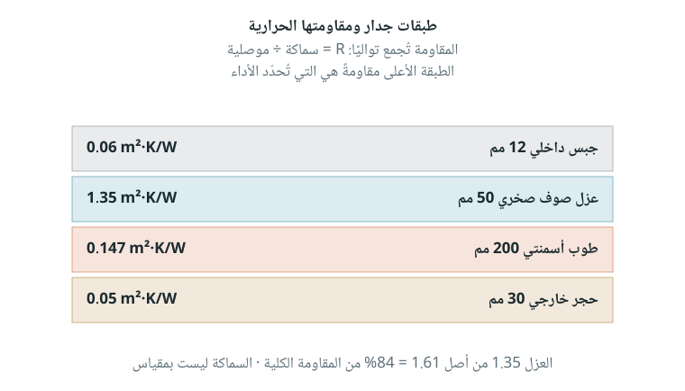
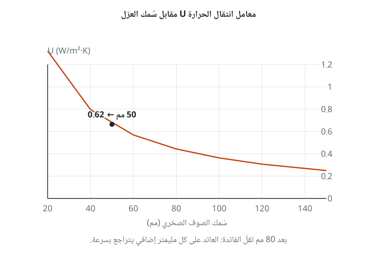

كم واطًا يعبر مترًا مربعًا من الجدار؟
غيّر سُمك العزل والمساحة وفارق الحرارة، وتابع الفقد اليومي بالواط والكيلوواط·ساعة.
بداية المقياس على الحالة المرجعية: 50 مم · 40 م² · 15 ك = 372 واط.
افتراضات النموذج والمصدر
Q = U · A · ΔT
جريان حراري مستقر
سطحان أفقيان بلا جسور حرارية
كثافة الصوف الصخري 0.04 W/(m·K)
لا تسرّب هواء ولا رطوبة
Mineral wool insulation — thermal conductivity — Engineering ToolBox
الحرارة تعبر الجدار بالتدريج: من الهواء الدافئ إلى سطح الجدار الداخلي، ثم خلال كل طبقة، ثم إلى الهواء الخارجي. مقاومة كل طبقة = سُمكها ÷ موصليتها، ومجموع المقاومات يعطي معامل الانتقال U.
في الجدار المرجعي (جبس 12 مم · صوف 50 مم · طوب 200 مم · حجر 30 مم) مجموع المقاومة 1.61 m²·K/W، منها 1.35 للعزل وحده — أي 84%. اللوحة تريك كيف يتغيّر U مع سُمك العزل وأثره في الفقد اليومي.
كيف تعمل الظاهرة؟
المقاومة الحرارية تتوالى كما تتوالى المقاومات الكهربائية على التوالي: كل طبقة تعيق التوصيل بحسب سُمكها وموصليتها. الطبقة الرقيقة عالية المقاومة (هواء محبوس في الصوف) تسيطر على المجموع، لأنها تمنع الحملان الداخليين وتقلّل التوصيل عبر مسارات صلبة متصلة.
العلاقة بالأرقام
R = L/k لكل طبقة، وU = 1/ΣR، وQ = U·A·ΔT. جدار مساحته 40 م² وفارق حرارة 15 ك وU=0.62 يفقد 372 واط، أي 8.9 كيلوواط·ساعة يوميًّا. وزيادة العزل من 50 إلى 100 مم تخفض U إلى 0.44 وتوفّر نحو 29% من الفقد.
مفاهيم متقاربة
يُخلط بين الموصولية k والمقاومة R ومعامل U: الأولى خاصية مادة، والثانية خاصية طبقة، والثالثة خاصية الجدار كله مع سطوحه. ويُخلط بين العازل والكتلة: الطوب يحفظ الحرارة لكنه لا يعزلها، والحرارة النوعية لا تُغني عن المقاومة.
حدود التطبيق
الحساب مستقرّ يفترض جريانًا حراريًّا مستقرًّا وظروفًا ثابتة، ويتجاهل الجسور الحرارية (أعمدة، عتبات، زوايا) التي ترفع الفقد فعليًّا 15–30%. ويُغفل أيضًا تسرّب الهواء، وهو في المباني القديمة أثقل من التوصيل نفسه.


| الكمية | القيمة | المصدر |
|---|---|---|
| موصلية الصوف الصخري | 0.040 W/(m·K) | [1] |
| مجموع مقاومة الجدار المرجعي | 1.61 m²·K/W | [2] |
| معامل U للجدار المرجعي | 0.62 W/m²·K | [2] |
المصادر
- 1 Mineral wool insulation — thermal conductivity — Engineering ToolBox. www.engineeringtoolbox.com/thermal-conductivity-d_429.html · اطُّلع عليه 2026-11-16
- 2 Thermal resistance (R-value) and U-factor — ASHRAE. www.ashrae.org/technical-resources · اطُّلع عليه 2026-11-16
راجعه: مراجعة آلية — بوابة الديوان (فحص بنيوي وأرقام) 2026-11-16 · 2026-11-16 · آخر تحديث 2026-11-17
رجوع إلى المعمل